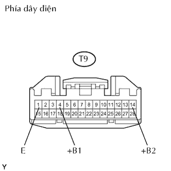

HỆ THỐNG CHỐNG TRỘM > Mạch nguồn ECU |
| 1.KIỂM TRA CẦU CHỈ (ECU-B, DCC, DOOR) |
Tháo cầu chì ECU-B và DCC ra khỏi hộp rơle khoang động cơ.
Tháo cầu chì DOOR ra khỏi hộp rơle NO.3.
Đo điện trở của các cầu chì.
|
| ||||
| OK | |
| 2.KIỂM TRA DÂY ĐIỆN (ECU CẢNH BÁO CHỐNG TRỘM - ẮC QUY VÀ MÁT THÂN XE) |
|  |
Ngắt giắc nối T9 của ECU.
Đo điện áp của giắc nối phía dây điện.
| Nối dụng cụ đo | Điều kiện tiêu chuẩn |
| T9-4 (+B1) - Mát thân xe | 10 đến 14 V |
| T9-14 (+B2) - Mát thân xe | 10 đến 14 V |
Đo điện trở của giắc nối phía dây điện.
| Nối dụng cụ đo | Điều kiện tiêu chuẩn |
| T9-1 (E) - Mát thân xe | Dưới 1 Ω |
|
| ||||
| OK | ||
| ||